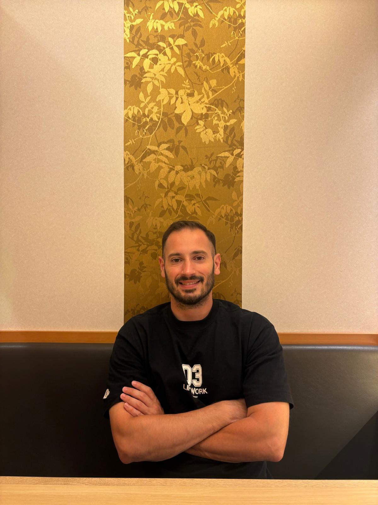

בעל אוריינטציה טכנית גבוהה, קליטה מהירה וירידה חדה לפרטים הקטנים. מביא ניסיון עשיר בתפעול, ביטחון וניהול צוותים, לצד ידע מעשי בביצוע בדיקות תוכנה, כתיבת תסריטי בדיקה (STD/STP), שאילתות SQL ובדיקות API.

לאורך הניסיון המקצועי שלי – מעבודה כמרכיב בפולטק רפאל, דרך תפקידי פיקוד, ניהול צוותים במטבח וניהול ביטחון במלונות דן – הקפדתי תמיד על עבודה לפי נהלים קפדניים, בטיחות, וסדר מופתי.
כבוגר 12 שנות לימוד במגמת מכונאות מטוסים ובעל לימודי תעודה באימון אישי וקבוצתי (Coaching), יש לי שילוב ייחודי של ידע טכני מעמיק, יכולת למידה עצמאית מהירה ותקשורת בינאישית מעולה.
עבורי, בדיקות תוכנה הן המשך טבעי ליכולת האיתור, הזיהוי והקפדה על איכות שמלווים אותי בכל תפקיד:
הכלים, הכלים הטכניים והמתודולוגיות שבהם אני משתמש
דוגמאות לתסריטי בדיקה, דוחות באגים רשמיים ואימות נתונים ב-SQL/API
דוגמה לתסריט בדיקה מפורט מתוך מסמך STD ודיווח תקלה בדרגת חומרה גבוהה ב-Jira.
| מזהה | נושא הבדיקה | צעדים (Steps to Reproduce) | תוצאה מצופה | סטטוס |
|---|---|---|---|---|
| TC-201 | אימות תקינות הזנת תעודת זהות בשדה הרשמה | 1. כניסה לטופס הרשמה 2. הזנת 8 ספרות בלבד ושמירה |
הודעת שגיאה: "מספר תעודת זהות חייב להכיל 9 ספרות" | PASSED |
| TC-202 | עקיפת תשלום באמצעות שינוי רכיב HTML בדפדפן | 1. הוספת מוצר לעגלה 2. שינוי value של השדה בממשק ל-0 |
המערכת בודקת מחיר בצד השרת ודוחה את התשלום | FAILED |
תיאור התקלה: שרת האפליקציה מקבל את סכום התשלום המועבר בעריכת DOM מבלי לבצע וידוא מול בסיס הנתונים.
מסלול הקריירה וההכשרות המקצועיות שלי
הרכבה מדויקת של רכיבים לפי מפרטים טכניים קפדניים, הקפדה יתרה על איכות, סדר ונהלי בטיחות מחמירים.
ניהול תפעול, אחריות על הזמנות מספקים וקבלת סחורה, בישול, ניהול קופה ועבודה תחת עומס.
ניהול פס חם ופס קר, עבודה לפי נהלי תברואה ובטיחות, עבודה בצוות ועמידה בזמנים בעומסים גבוהים.
אחריות על ביטחון פנימי, שמירת סדר, טיפול באירועי חירום, עזרה ראשונה וחונכות והכשרת עובדים חדשים.
ניהול צוות של כ-12 חיילים, תפעול שוטף, סדר וארגון ברמה גבוהה.
לימודים טכניים מקיפים, הבנת מערכות מורכבות ודיוק הנדסי.
מעוניינים בבודק תוכנה רציני, אחראי, בעל קליטה מהירה ואוריינטציה טכנית גבוהה? אשמח לדבר ולהגיע לראיון.